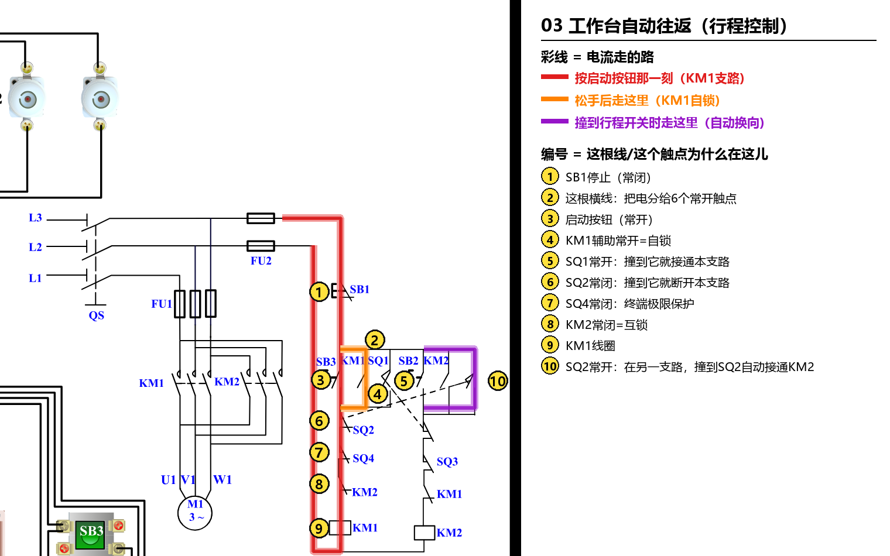
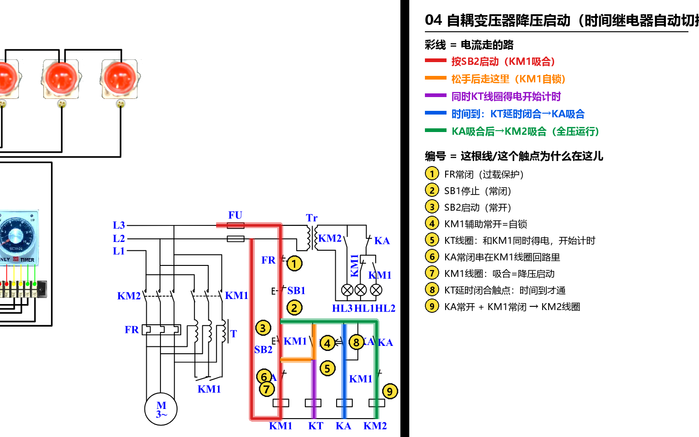
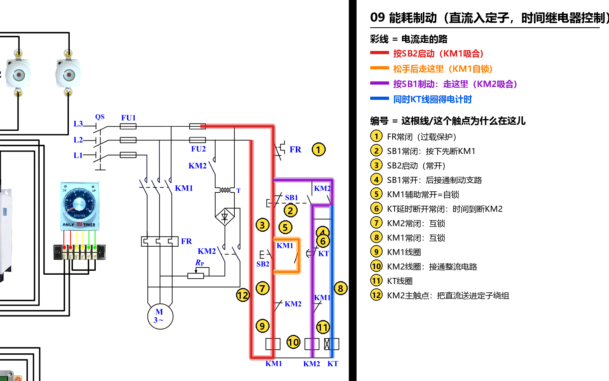

01 有过载保护的正转控制
02 双重互锁正反转控制
03 工作台自动往返（行程控制）
04 自耦变压器降压启动
05 按钮切换的 Y—△ 降压启动
06 时间继电器 Y—△ 降压启动
07 机械制动（电磁抱闸）
08 反接制动
09 能耗制动
一张表
先记 4 条规律，9 个图全通
串联 = 谁都能喊停 一串东西里断一个，后面全没电 所以停止按钮、FR 常闭、互锁触点全串在回路里
并联 = 多开一扇门 只要有一扇门通，电就能过去 所以自锁触点、行程开关常开都并在启动按钮两端
自锁 = 自己给自己留后门 接触器一吸合，自己的常开触点跟着合上，把启动按钮短路掉 松手后电从这条后门走，接触器一直吸着
互锁 = 给对方上锁 把对方的常闭触点串在我的线圈回路里 对方吸着，我就吸不上，两个永远不同时吸合
01
有过载保护的正转控制 一切的基础
一句话： 按一下启动，电机一直转；按停止才停；过载了自动停。
好记版（打比方）
自锁就像楼道的声控灯你改成“按一下常亮”的开关：手按一下（启动按钮），电路接通；同时它自己拿一根线把按钮两端连起来（自锁触点），你手松开，电照样走。想关灯，得去按那个“断开”的开关（停止按钮）。FR 像一根保险丝式的“体温计”：电机长时间“发烧”（过载），它热到弯曲，把控制回路掐断。
动作步骤
启动：按 SB2 → KM 线圈得电 → KM 主触点闭合 → 电机转
自锁：KM 吸合的同时，它自己的辅助常开触点闭合，把 SB2 两端连起来 → 松手后电从这里走
停止：按 SB1（常闭）→ 回路断 → KM 释放 → 主触点和自锁触点一起断 → 电机停
过载：电机电流太大 → FR 热元件发热 → 常闭触点断 → 同“停止”
必背
自锁 = 接触器用自身的辅助常开触点，并联在启动按钮两端，保持线圈继续通电。热继电器：热元件串在主电路，常闭触点串在控制电路。停止用常闭按钮，启动用常开按钮。
看图要点
看橙线：松手后电流从 KM 自锁触点（⑤）绕过 SB2（④）。自锁触点必须并在 SB2 两端，不能并在 SB1 上——否则停止按钮就失效了。
有过载保护的正转控制 的电路图（软件原图）。彩线 = 电流走的路，编号 = 这根线/这个触点为什么在这儿。点图放大。
原文（软件旁白，点开看） 原文（软件旁白） 电路由主电路和控制电路两部分组成。合上电源开关 QS，电源引入。按下 SB2，控制电路中 KM 线圈通电，控制电路中 KM 动合辅助触点闭合，给松开 SB2 后 KM 线圈仍然通电提供了回路。这种接触器通电后仍能自动保持动作后的状态的方法，称为自锁。同时主电路中 KM 动合主触点闭合，电动机通电转动。停止电动机工作，只需按下 SB1 即可。电路中 FR 是一个热继电器，它可以对电动机进行过载保护。热继电器的热元件串接在主电路中，其动断触点串接在控制电路中。当发生过载故障时，电动机定子绕组中的电流会大大增加超过额定值，过大电流所产生的热量会使热继电器的双金属片弯曲，从而推动其动断触点断开，切断控制电路，避免电动机因长时间过载而烧毁。
↑ 回到顶部
02
双重互锁正反转控制 对调两相就能反转
一句话： 两个接触器：KM1 直接接过去（正转），KM2 把两相对调（反转）。两个绝不能同时吸合，所以要互锁。
好记版（打比方）
正反转像一扇只能开一边的门：KM1 管“往外推”，KM2 管“往里拉”。两个同时使劲门就废了（电源短路）。所以装两把锁：① 我的门缝里塞对方的常闭（接触器互锁）——你开着，我就推不动；② 按钮也做成复合的，你按“往里拉”，它先把我“往外推”的回路断掉（按钮互锁）。两把锁 = 双重互锁。
记法：自锁触点“并”在自己启动按钮两端；互锁触点“串”在对方线圈回路里。一个并联、一个串联，别搞反。
动作步骤
正转：按 SB1 → 电流经 SB3 → SB2 常闭 → SB1 → KM2 常闭 → KM1 线圈 → KM1 吸合（主触点闭、自锁、常闭断开反转支路）
反转：先按 SB3 停，再按 SB2；或者直接按 SB2：它的常闭先断 KM1 回路 → KM1 释放 → 它的常闭复位 → SB2 常开才接通 KM2
停止：按 SB3 → 两个支路一起断电
必背
双重互锁 = 接触器互锁 + 按钮互锁。自锁触点并联在本方启动按钮两端，互锁触点串联在对方线圈回路里。
看图要点
看⑨：KM2 的出线两根交叉，就是对调两相。看左支路最上面④：那是反转按钮 SB2 的常闭，串在正转回路里 = 按钮互锁。⑦ 是 KM2 的常闭 = 接触器互锁。
双重互锁正反转控制 的电路图（软件原图）。彩线 = 电流走的路，编号 = 这根线/这个触点为什么在这儿。点图放大。
原文（软件旁白，点开看） 原文（软件旁白） 工作时合上电源开关 QS，电源引入。正转工作时，按下 SB2，SB2 的动断触点先断开反转电路，实现按钮互锁。然后 SB2 动合触点闭合，KM1 线圈通电，其动断触点先断开反转电路，实现接触器互锁。而后 KM1 动合辅助触点闭合，实现自锁，动合主触点闭合电动机通电正转。反转工作时可直接按下 SB3。反转控制电路与正转控制电路完全相同，请自行分析。停止电动机工作时，只需按下 SB1 即可。
↑ 回到顶部
03
工作台自动往返（行程控制） 到头自动换向
一句话： 工作台走到头，撞块碰行程开关：先停这边，再起对面。
好记版（打比方）
行程开关就像走廊两头墙上的“触角开关”：工作台一头撞上去，这个开关两对触点一起动作——常闭先断（把自己这边的电掐了），常开后合（把对面那边的电接上）。所以每个行程开关的两对触点被拆开放在两个支路里。SQ3、SQ4 是装在更外面的“防撞墙”：万一里头的 SQ1、SQ2 坏了没反应，工作台冲过去撞到它，也能把回路硬断开。
动作步骤
右移：按 SB2 → KM1 吸合自锁 → 电机正转 → 工作台右移
到右头：撞 SQ2 → SQ2 常闭先断 KM1（电机停）→ SQ2 常开后合接通 KM2（紫线）→ 电机反转 → 左移
到左头：撞 SQ1 → 同理，停 KM2、起 KM1 → 又右移
出事：SQ1/SQ2 失灵 → 撞 SQ3/SQ4（极限保护）→ 硬断开，防止越位
必背
SQ3、SQ4 的作用 = 防止 SQ1、SQ2 失灵造成工作台越位的极限保护。动作顺序 = 动断先断、动合后合。
看图要点
看②那根横线：它把电同时分给 6 个常开触点（左右支路各 3 个并联）。看⑥和⑩：它们是同一个行程开关 SQ2 的两对触点，一个在左支路串联（停），一个在右支路并联（起）。

工作台自动往返（行程控制） 的电路图（软件原图）。彩线 = 电流走的路，编号 = 这根线/这个触点为什么在这儿。点图放大。
原文（软件旁白，点开看） 原文（软件旁白） 在某些机床设备上，往往要求电动机带动工作台能自动往返运行。解决的方法是，在往返的限定位置安装行程开关，用运动部件的撞块使行程开关动作，接通或断开控制电路，实现电动机正反转的自动转换。我们设定电动机正转工作台右移，反转则工作台左移。工作时，若需右移，则按下 SB2，KM1 线圈通电，其动断触点断开反转电路，实现互锁，动合辅助触点闭合，实现自锁，动合主触点闭合，电动机正转。工作台右移，到达限定位置时，撞动行程开关 SQ2，SQ2 动断触点先断开正转控制电路，然后动合触点闭合接通反转电路，电动机反转。SQ2 复位，工作台左移控制电路与右移控制电路完全相同，请自行分析。电路中的 SQ3 和 SQ4 是为了防止 SQ1、SQ2 失灵工作台越位而设的极限保护。如 SQ2 失灵，工作台撞上 SQ4，可断开右移电路。
↑ 回到顶部
04
自耦变压器降压启动 先低压起步，到时间换全压
一句话： 启动时让电机从变压器抽头拿低电压；时间继电器到时间，自动切到全压。
好记版（打比方）
像骑变速车起步：先用低速档（变压器抽头，电压低），蹬起来再换高速档（全压）。KT 是“秒表”，到时间喊一声；KA 是“传令兵”，听到喊声就去干两件事：把低速档（KM1）撤掉，把高速档（KM2）挂上。KA 先撤 KM1 再挂 KM2，中间串了 KM1 的常闭，保证不会两个档同时挂着（电源短路）。
动作步骤
合 QS → HL1 亮（电源指示）
按 SB2 → KM1 吸合自锁，KT 开始计时，HL2 亮 → 电机从变压器抽头拿低电压启动
时间到 → KT 延时闭合 → KA 吸合自锁 → KA 常闭断开 KM1（HL2 灭）
KA 常开 → 经 KM1 常闭 → KM2 吸合 → 全压运行，HL3 亮
必背
自耦变压器降压启动用于较大容量电机；电路由主电路、控制电路、指示电路组成。KA 的作用：切换——断开启动接触器 KM1，接通运行接触器 KM2。指示灯：HL1 电源、HL2 降压启动、HL3 全压运行。
看图要点
主电路：KM1 的主触点把三相电源接到变压器三个首端，抽头直接接电机侧，尾端由 KM1 另一组触点短接成星形；KM2 的主触点在电源侧，管全压。控制回路从横线往下 4 条并联支路。

自耦变压器降压启动 的电路图（软件原图）。彩线 = 电流走的路，编号 = 这根线/这个触点为什么在这儿。点图放大。
原文（软件旁白，点开看） 原文（软件旁白） 自耦变压器降压启动方法常用来启动较大容量的三相交流电动机。电路由主电路、控制电路和指示电路三部分组成。工作时，合上电源开关 QS，电源引入，指示灯 HL1 亮。启动时按下 SB2，KM1 线圈通电，KM1 动断辅助触点先断开全压运行电路和电源指示电路，实现互锁。KM1 的四个动合辅助触点闭合：其一实现自锁，使 KT 线圈通电开始计时；其二接通 HL2 的电路，降压运行指示灯 HL2 亮；其三使自耦变压器星接；KM1 动合主触点闭合，电动机串入自耦变压器降压启动。时间继电器计时时间到，其动合触点闭合，KA 线圈通电，其动断触点断开启动电路和降压运行指示电路，实现互锁；动合触点闭合实现自锁，并使 KM2 线圈通电。KM2 通电后，其动合主触点闭合，电动机全压运行；动合辅助触点闭合，接通 HL3 的电路，全压运行指示灯 HL3 亮。停止工作，按下 SB1 即可。
↑ 回到顶部
05
按钮切换的 Y—△ 降压启动 星形起步，按一下换三角形
一句话： 启动时定子接成星形（Y），电流和转矩都只有直接启动的 1/3；启动完按 SB2 换成三角形（△）全压运行。
好记版（打比方）
星三角像用“小档起步”：电机六根线，星形（Y）是把 U2 V2 W2 三个尾端捏在一起，每相只分到 220V；三角形（△）是把首尾相接，每相 380V 全压。KMY 管“捏在一起”，KM△ 管“首尾相接”，两个绝对不能同时吸合（同时吸 = 电源短路）。切换靠一个复合按钮 SB2：按下去常闭先断 KMY（先松手），常开后合 KM△（再抓住）。
动作步骤
按 SB1 → KM 吸合自锁；KMY 吸合（经 KM△ 常闭、SB2 常闭）→ 星形降压启动
启动完按 SB2 → SB2 常闭先断 KMY → SB2 常开后合 KM△ 并自锁 → 三角形全压运行
KM△ 吸合后，它的常闭断开 KMY 回路 = 互锁
停止按 SB3
必背
Y—△ 启动只适用于正常运行时三角形接法的电机（有 6 个出线端）。启动时每相电压降为 1/√3，启动电流和启动转矩都降为直接启动的 1/3。KMY 把 U2 V2 W2 短接成星形；KM△ 把 U2 V2 W2 接到 W1 U1 V1 成三角形；两者必须互锁。
看图要点
主电路看三个接触器：KM 接电源到 U1 V1 W1；KMY 把 U2 V2 W2 短接；KM△ 把 U2 V2 W2 接到 W1 U1 V1（交叉）。控制回路：⑥ KM△ 常闭和⑦ SB2 常闭串在 KMY 里；⑪ KMY 常闭串在 KM△ 里。
按钮切换的 Y—△ 降压启动 的电路图（软件原图）。彩线 = 电流走的路，编号 = 这根线/这个触点为什么在这儿。点图放大。
原文（软件旁白，点开看） 原文（软件旁白） 电动机星、角降压启动控制电路，是解决电动机启动电流过大的常用方法之一。这种方法只适用于三角形接法的电动机。其工作原理是，在电动机启动时，将定子绕组接成星形降压启动，启动结束后，再将定子绕组接成三角形全压运行。工作时，合上电源开关 QS，电源引入。按下 SB2，KM 和 KM星 线圈通电，KM星的动断触点先断开 KM角的控制电路实现互锁，然后其动合主触点闭合，将电动机定子绕组接成星形。KM 的动合辅助触点闭合自锁，动合主触点闭合，电动机星形接法降压启动。当启动结束时，按下 SB3，SB3 的动断触点先断开 KM星的控制电路，动合触点闭合，接通 KM角的控制电路。KM角线圈通电，KM角动断辅助触点断开 KM星的电路实现互锁，KM角动合触点闭合自锁，动合主触点闭合，电动机三角形接法，全压运行。停止工作时，按下 SB1 即可。
↑ 回到顶部
06
时间继电器 Y—△ 降压启动 星形起步，到时间自动换三角形
一句话： 和 05 只差一点：没有切换按钮，时间继电器到时间自己完成“先断星形、后合三角形”。
好记版（打比方）
把 05 里那个“按一下切换”的按钮换成一只闹钟（KT）：你只管按启动，闹钟到点自己响，一只手先拉掉 KMY（星形），另一只手再合上 KM△（三角形）。因为是同一个闹钟的两对触点，它天生就保证“先断后合”，不需要人管。
动作步骤
按 SB1 → KM 吸合自锁；KT 得电开始计时；KMY 经 KM△ 常闭、KT 常闭吸合 → 星形启动
时间到 → KT 延时断开的常闭先断 KMY（脱离星形）
KT 延时闭合的常开后合 KM△ → 三角形全压运行
KM△ 吸合后常闭断开 KT 线圈，计时结束（KT 只在启动时工作）。停止按 SB
必背
Y—△ 启动只适用于三角形接法的电机；启动电流、启动转矩均为直接启动的 1/3。断 KMY 和接通 KM△ 用的是同一个时间继电器的两对触点：延时断开的常闭串在 KMY 里，延时闭合的常开串在 KM△ 里。
看图要点
和 05 对比着看：⑤ KM 线圈直接接横线；⑦ KT 延时断开常闭串在 KMY 里；⑪ KT 延时闭合常开串在 KM△ 里；⑨ KT 线圈从 KM△ 常闭下面那个节点引出。
时间继电器 Y—△ 降压启动 的电路图（软件原图）。彩线 = 电流走的路，编号 = 这根线/这个触点为什么在这儿。点图放大。
原文（软件旁白，点开看） 原文（软件旁白） 这种方法只适用于三角形接法的电动机。其工作原理是，在电动机启动时，将定子绕组接成星形降压启动，启动结束后，再将定子绕组接成三角形全压运行。工作时，合上电源开关 QS，电源引入，按下 SB2，KM、KT 和 KM星 线圈通电，KM星的动断辅助触点先断开 KM角的电路实现互锁，KM 的动合辅助触点闭合自锁，KM 的动合主触点闭合，KM星的动合主触点闭合，电动机定子绕组星形接法启动。时间继电器通电后，进行启动过程计时，计时时间到，其动断触点先断开，使 KM星的线圈断电；其动合触点闭合，使 KM角的线圈通电，KM角的动断触点先断开 KM星的电路，实现互锁，然后其动合主触点闭合，将电动机定子绕组接成三角形全压运行。停止工作时，按下 SB1 即可。
↑ 回到顶部
07
机械制动（电磁抱闸） 断电就抱死
一句话： 线圈通电松闸、断电抱闸。抱闸线圈并在 KM 之后的电机两相上，和电机同呼吸。
注意 07 的原图排版和别的不同（电源在上、控制回路在右侧），编号 ① 在最上面的 FU2 上。
好记版（打比方）
电磁抱闸 = 自行车的刹车皮加一块电磁铁。通电时电磁铁把刹车皮吸开，轮子能转；一断电磁铁没劲，弹簧把刹车皮压紧，轮子立刻停。关键是电磁铁的线接在哪：接在 KM 后面的电机两相上——电机有电它就松，电机没电它就抱，永远不会出现“电机转着但刹车抱死”或“电机没电但刹车松着”。
动作步骤
按 SB2 → KM 吸合自锁 → 主触点闭合：电机通电，同时抱闸线圈通电 → 松闸 → 电机转
按 SB1（或突然停电）→ KM 释放 → 抱闸线圈断电 → 弹簧把闸瓦压紧闸轮 → 电机立即停
必背
电磁抱闸组成：电磁线圈、衔铁、杠杆、弹簧、闸瓦、闸轮。线圈通电松闸，断电抱闸（断电制动型）。抱闸线圈并接在 KM 主触点之后的电机两相上。
看图要点
看蓝线：抱闸线圈（⑦）的两个头接在电机 V、W 两相上，而且是在 KM 主触点和 FR 的后面（靠电机侧）。控制回路和 01 一模一样，只是 FR 常闭画在了回路另一头。
机械制动（电磁抱闸） 的电路图（软件原图）。彩线 = 电流走的路，编号 = 这根线/这个触点为什么在这儿。点图放大。
原文（软件旁白，点开看） 原文（软件旁白） 所谓机械制动是指利用机械装置，使电动机切断电源后立即停转。目前广泛使用的机械制动装置是电磁抱闸。电磁抱闸的结构主要由电磁线圈、衔铁、闸瓦和闸轮组成。当线圈处于通电状态时，闸瓦松开闸轮；当线圈处于断电状态时，闸瓦抱紧闸轮。工作时，合上电源开关 QS，电源引入，按下 SB2，控制电路中 KM 线圈通电，控制电路中 KM 辅助动合触点闭合自锁。同时，主电路中 KM 动合主触点闭合。在 KM 动合主触点闭合的同时，电磁抱闸的线圈通电，松开闸瓦，电动机转动。如果运行中突然停电或按下停止按钮 SB1，电磁抱闸的线圈断电，闸瓦能立即抱紧闸轮，使电动机迅速停转。
↑ 回到顶部
08
反接制动 反着拽一下，快停
一句话： 停车时立即对调两根电源线，让电机产生反向力矩拽住它；转速低于 120 转/分由速度继电器自动切断，否则就反转了。
好记版（打比方）
像一个往前冲的人，你伸手往反方向推他一把，他很快就停下。但推过头他就会倒着走——所以要有个“停手”的判断：速度继电器 SR 装在电机轴上，转速高于 120 转/分它才闭合（可以推），一降到 120 以下它自己断开（立刻停手）。反接时电流非常大，所以 KM2 的主触点每相串一个电阻 R 限流，像给水流加了个窄口。
动作步骤
按 SB2 → KM1 吸合自锁 → 电机正转 → 转速升高 → SR 常开闭合（为制动做准备）
停车按 SB1（复合按钮）→ 常闭先断 KM1（电机脱离正转电源）→ 常开后合
经 SR 常开、KM1 常闭 → KM2 吸合 → 两相对调反接制动
转速降到 120 转/分以下 → SR 断开 → KM2 释放 → 制动结束（电机不会反转）
必背
反接制动：停止后立即对调两根电源线。反转电路串电阻是为了减小过大的反接电流。速度继电器：转速大于 120 转/分常开闭合，小于 120 转/分断开，制动自动结束。
看图要点
主电路：KM2 的三对主触点每相串一个电阻 R（⑩），两根出线交叉。控制回路：SB1 是复合按钮（②常闭、④常开用虚线连着），制动支路串了 SR 常开（⑤）和 KM1 常闭（⑧）。
反接制动 的电路图（软件原图）。彩线 = 电流走的路，编号 = 这根线/这个触点为什么在这儿。点图放大。
原文（软件旁白，点开看） 原文（软件旁白） 运行中的电动机在切断电源后，由于惯性的作用不能立即停下来。对于要求尽快停车的生产机械，就需要采取制动措施。反接制动的原理是，电动机停止正常正转运行后，立即对调两根电源线，使电动机反转，产生制动力矩，达到尽快停车的目的。工作时，合上电源开关 QS，电源引入，按下 SB2，KM1 线圈通电，KM1 动断触点断开 KM2 的电路，实现互锁，KM1 动合触点闭合自锁，KM1 动合主触点闭合，电动机正转运行。当电动机转速大于每分钟 120 转时，速度继电器动合触点闭合。结束工作时，按下 SB1，SB1 的动断触点断开 KM1 的电路，电动机正转断电，SB1 动合触点闭合，KM2 线圈通电，KM2 动断触点断开 KM1 的电路，实现互锁，KM2 动合触点闭合。反转电路中串入电阻，是为了减小过大的反接电流。当正反转矩相互抵消，电动机转速小于每分钟 120 转时，速度继电器动合触点断开，制动结束。
↑ 回到顶部
09
能耗制动 灌直流，平稳停
一句话： 切断交流后立即往定子里通直流，产生不动的磁场把转子“拽停”；时间继电器控制制动时间。
好记版（打比方）
像把一个转着的陀螺按进胶水里：直流通进定子，产生一个固定不动的磁场，转子在里面转就感应出电流，受到反向的力，转动的能量被变成电能消耗掉（所以叫“能耗”），平稳又准确地停下。整流装置（变压器 → 整流桥 → 可调电阻 RP）就是把交流变成合适大小的直流。RP 调的是直流大小，也就是刹车有多狠。
动作步骤
按 SB2 → KM1 吸合自锁 → 电机运行
停车按 SB1（复合按钮）→ 常闭先断 KM1（脱离交流）→ 常开后合 → KT 和 KM2 同时得电
KM2 主触点把直流送入定子 → 制动
KT 时间到 → 延时常闭断开 KM2 → 制动结束
必背
能耗制动：切断交流后立即向定子绕组通入直流。电路由主电路、控制电路、整流电路组成。制动时间长短由时间继电器控制。
看图要点
主电路右边多了一套整流电路：L2、L3 两相 → KM2 一对主触点 → 变压器 T → 整流桥 → 直流经 KM2 另两对主触点和 RP 送进电机两相。控制回路：④ SB1 常开 → ⑥ KT 延时断开常闭 → ⑧ KM1 常闭 → ⑩ KM2 线圈；⑪ KT 线圈和它并联。

能耗制动 的电路图（软件原图）。彩线 = 电流走的路，编号 = 这根线/这个触点为什么在这儿。点图放大。
原文（软件旁白，点开看） 原文（软件旁白） 能耗制动的原理是，在切断交流电源后，立即将直流电通入电动机定子绕组，产生制动力矩，使电动机尽快停车。电路由主电路、控制电路和整流电路三部分组成。工作时，合上电源开关 QS，电源引入。电动机工作时按下 SB2，KM1 线圈通电，其动断触点先断开 KM2 的电路实现互锁，然后 KM1 动合触点闭合自锁，KM1 动合主触点闭合，电动机运行。停止工作时，按下 SB1，SB1 的动断触点先断开 KM1 的电路，使电动机脱离交流电源，SB1 的动合触点闭合，使 KM2 和时间继电器 KT 线圈通电。KM2 动断触点先断开 KM1 的电路，实现互锁，然后 KM2 动合触点闭合，KM2 动合主触点闭合，整流电路工作，将直流电送入电动机定子绕组，产生制动力矩。制动过程时间的长短由时间继电器控制，定时时间到，时间继电器动作，其动断触点断开，能耗制动结束。
↑ 回到顶部
9 个一张表
电路 关键电器 一句话原理 谁管“停”
01 正转自锁 KM、FR 自锁保持；FR 过载保护 SB1 停止 / FR 过载 02 双重互锁 KM1、KM2 对调两相 = 反转；两接触器不能同时吸合 SB3 停止 03 自动往返 + SQ1–SQ4 撞行程开关：动断先断本方，动合后合对方 SQ1/SQ2 换向 / SQ3、SQ4 极限 04 自耦降压 KM1、KM2、KT、KA、T 抽头低压启动，KT 到时 KA 切到全压 SB1 停止 05 按钮 Y—△ KM、KMY、KM△、SB2 星形启动 1/3 电流，按钮先断星后合角 SB3 停止 06 时间继电器 Y—△ KM、KMY、KM△、KT KT 到时先断星形后合三角形 SB 停止 07 机械制动 KM + 抱闸 抱闸线圈并在 KM 后的电机两相：有电松闸、断电抱闸 SB1 / 断电 08 反接制动 KM1、KM2、SR、R 对调两相反接，电阻限流，SR 低于 120 转断开 SB1 制动 09 能耗制动 KM1、KM2、KT、整流桥 切交流通直流，KT 控制制动时间 SB1 制动
原文 = 软件“动画”页旁白的转写稿（语音识别整理，个别字词可能有误差，已和讲解内容核对过）。电路图取自软件“电路”页。点读版（点哪里讲哪里）：打开 。